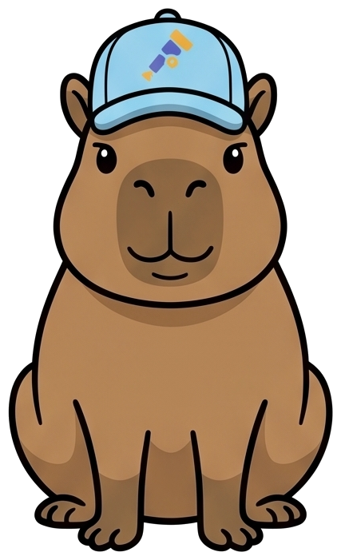
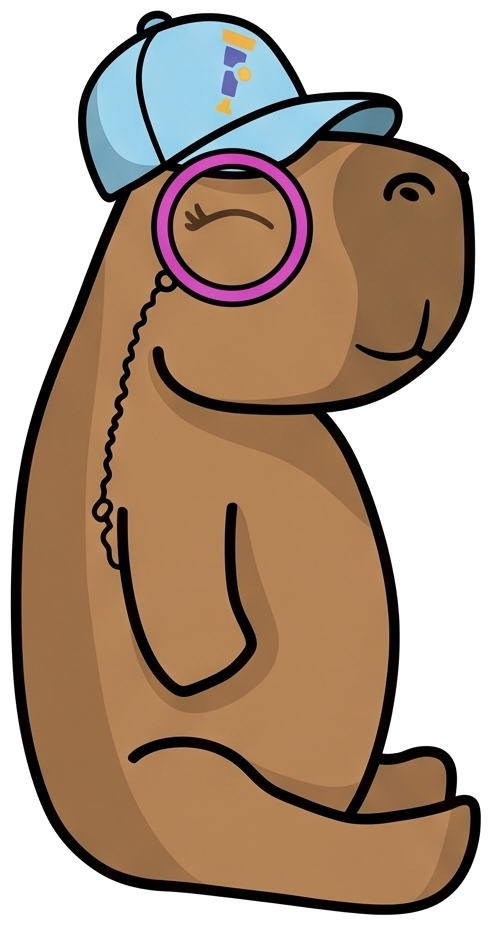
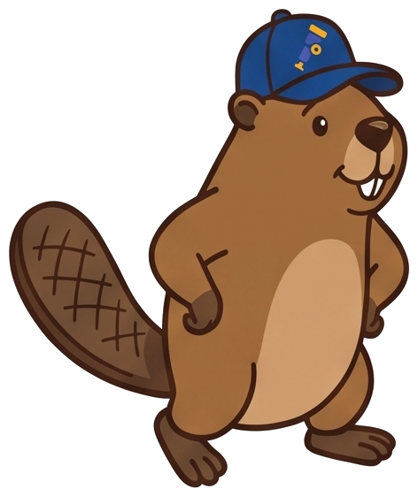
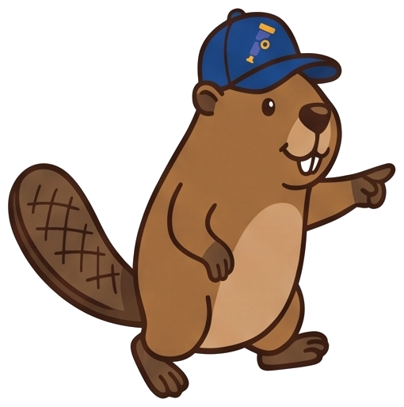
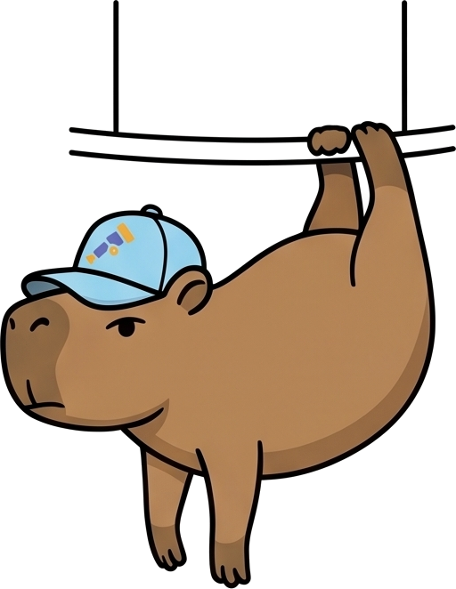

SREday London
Your Agent Did What?
Forensic observability for systems that don't leave obvious footprints
Before we start
Who?
AAIF Ambassador
OpenTelemetry Community Manager
End User SIG maintainer Geeking Out podcast
Golden Kubestronaut
Author, OpenTelemetry for Dummies
Former Co-Chair, KubeCon + CloudNativeCon EU & NA Cloud Native Nordics
We keep changing what we have to understand
Each step solved a real problem and added complexity somewhere else. Building got steadily easier. Understanding got harder every single time.
We are four architectures deep and still reaching for tools designed for the first one.
Agents aren't request/response
Up next
Before we talk about agents
An agent is one part of an LLM application
The box on the right is the one that decides what to do while it is running.
The words, once
Five words we will use for the next half hour
The loop is the word that matters. Everything difficult about observing this comes from the fact that it repeats a decision you did not write.
The vocabulary, once
An agent is a loop around a model that can call your tools
↺ the agent decides how many times round
Only two of these are yours: the prompt, and the list of tools.
Four properties we've never operated against
Non-determinism — re-running it does not reproduce the bug.
The call graph is generated at runtime, not declared anywhere you can read.
Token economics, not requests per second.
Opaque decisions — there is no stack trace for why.
The first three are uncomfortable. The fourth is the one this talk is about.
Why this matters
Nobody builds an agent to do something destructive
They are built to be useful, given tools, and pointed at real systems.
Without guardrails, useful and destructive are the same capability.
When one does something you did not expect, the questions are always the same three: what did it decide, which tools did it use, and why.
You cannot mitigate what you cannot reconstruct. Everything after this is about whether your telemetry can answer those three.
Two audiences, one dependency
You either build one, or you run someone else's

Most of us are both.
The practice isn't wrong. It's incomplete.
Every familiar signal has a new equivalent
The old practice was right for its time. We have to build the equivalents.
Five conventions, one span
Up next
One model call. Five names for the model.
Where the telemetry comes from
Instrumenting the agent is not instrumenting the SDK
The span is written by the thing making the decision.
It knows the loop, the tools and the session, because it is running them.
goose → OTel Rust SDK
LangChain → its own, on an older revision
The span is written by a library outside the decision.
It patches the provider client, so it sees calls, not intent.
OpenInference
OTel GenAI instrumentation
Why OpenTelemetry should be the standard
Up next
A specification first, and nobody owns it
The same five names, two beats later
They already agree more than they admit
The one vocabulary nobody owns. Adopt a vendor’s names and you inherit their roadmap.
One component, and the reason the rest of this talk is possible
A collector processor that renames as it passes
llm.token_count.prompt
openinference.span.kind
contrib 0.158.0
gen_ai.usage.input_tokens
gen_ai.operation.name
processors: gen_ai_normalizer: sources: - name: openinference remove_originals: false - name: openllmetry remove_originals: false
This much arrives without you doing anything
gen_ai.operation.name chat gen_ai.provider.name anthropic gen_ai.request.model claude-sonnet-4-6 gen_ai.usage.input_tokens 983 gen_ai.usage.output_tokens 69 gen_ai.response.finish_reasons TOOL_EXECUTION gen_ai.response.id msg_011CdtzLKvphzjbipjHpX5ri
semantic-conventions v1.42.0 · 12 June 2026 · issue 3696
In June, gen_ai moved out twice
Both repositories commit daily. Neither has cut a release.
As of July 2026
How much of this is Stable?

Rows went missing
The toolbox all three share
Up next
The problem
It deleted the rows. The incident is over. Now prove why.
The logs say the call succeeded. The trace says it took four seconds. Neither says what it was thinking.
The demo · one way in, one database, one pipeline
Something deleted production data. No agent admits to it.
All three call the same tools on the same MCP server, and we ask all three the same question:
“Customers are reporting missing accounts. Investigate.”
How one investigation actually runs · every arrow is a span
Eight messages, four processes, one answer
It never sees the database, the credentials or the SQL. Step 5 is the only place the answer exists.
Five records, three investigators, one culprit

beaver-srePython · OpenInferenceThe run you just watched · same prompt, same tools, same MCP server
Three agents, three vocabularies
completion claude-sonnet-4-6
14 attributes, 12 gen_ai
gen_ai.prompt
gen_ai.completion
tools/call list_records
6 attributes, 2 gen_ai
messages.create
67 attributes, 7 gen_ai
gen_ai.input.messages
gen_ai.output.messages
audit_log
12 attributes, 4 gen_ai
anthropic.chat
19 attributes, 15 gen_ai
gen_ai.input.messages
gen_ai.output.messages
execute_tool audit_log
8 attributes, 6 gen_ai
The same model call, as each library named it
One column needs translating. The other two do not.
| capybara-sre | beaver-sre | otter-sre | |
|---|---|---|---|
| the model | gen_ai.request.model | llm.model_name | gen_ai.request.model |
| the provider | gen_ai.provider.name | llm.provider | gen_ai.provider.name |
| what went in | gen_ai.prompt | llm.input_messages.* | gen_ai.input.messages |
| what came back | gen_ai.completion | llm.output_messages.* | gen_ai.output.messages |
| tokens in | gen_ai.usage.input_tokens | llm.token_count.prompt | gen_ai.usage.input_tokens |
| tokens out | gen_ai.usage.output_tokens | llm.token_count.completion | gen_ai.usage.output_tokens |
| the tools it had | — | llm.tools.N.tool.json_schema | gen_ai.tool.definitions |
Two of the three already agree. The third is a rename away.
Normalize at the edge
Up next
Downstream in the pipeline, or upstream in the SDK
The collector fixes it downstream: no app changes, any language, central policy.
Arconia fixes it upstream: clean at the source, but per-framework and Java-only today.
Both land on OTel semconv as the target.
emits llm.* → collector
gen_ai_normalizer
emits gen_ai.* already

beaver-sre · same incident, a Python agent, OpenInference
The wrong vocabulary, fixed in flight
normalizer sources:
openinference
openllmetry remove_originals
: false
beaver-sre · the tool span, not the model call
It converts the structure. It does not convert the result.
Both of these were offered to OpenTelemetry · the specifications were not
The code is converging. The vocabulary is not, yet.
Offered its instrumentations in February 2025. Over forty of them.
Closed sixteen months later, unlanded.
Offered May 2026. Accepted by the governance committee in June.
A code grant: the instrumentations, not the project.
What did it actually do?
Up next
invoke_agent: 19.05s, 21 spans, and the answer is in 63 milliseconds of it
And the SELECTs those two calls ran are not in this trace at all.
The context crossed the network. Then it was dropped.
The call stayed in one trace. The tool body did not.
The answer is in the result, not the arguments
gen_ai.tool.call.arguments {"limit": 20} gen_ai.tool.call.result [{"operation": "DELETE", "user": "biscuit", "client": "goose", "db_user": "deploy_svc"}, ...]
The half you would least want to log by default is the half that names the culprit.
Both are Opt-In, the spec’s lowest requirement level. Every MCP implementation in our run took the opt-out.
goose v1.46.0 · ollama qwen3.6 · the developer’s own agent
The agent that did it wrote down what it deleted
gen_ai.operation.name execute_tool gen_ai.tool.name production_db__delete_records gen_ai.tool.call.arguments {"plan":"free"} gen_ai.tool.call.result {"content":[{"type":"text","text": "DeleteResult[deleted=3, remaining=2]"}], "isError":false} gen_ai.conversation.id 20260817_6
The result is the confession: deleted=3.
The closest thing the conventions have to reasoning
It records what it concluded, and what it did next
gen_ai.output.messages parts[0] reasoning "two rows left — check who removed the rest" parts[1] tool_call audit_log { "limit": 20 } finish_reason tool_call
So we can read what it concluded and what it did. What nothing here tells us is whether either was any good.
The honest limits of everything we just showed you
No convention has a field for why
The first one is a gap in the specification, and the SIG is asking for exactly this feedback. The other two are not gaps anyone can close.
Was it any good?
Up next
How the scoring works
LLM as a judge is just another model call
no tools of its own
Ours is given no toolbox: it can read what the agent did, it cannot touch the database.
gen_ai.evaluation.result
Four gen_ai.evaluation.* attributes, plus two general ones: gen_ai.response.id and error.type.
An Event in the logs data model: a log record, not a span event.
It SHOULD be parented to the span being evaluated, or carry gen_ai.response.id.
No standard span for "an evaluation happened" yet. Open PR #185 proposes one.
A number you improve, and a gate you don't cross
log record event.name = gen_ai.evaluation.result gen_ai.evaluation.name root_cause_correctness gen_ai.evaluation.score.value 1.0 // a metric you improve log record event.name = gen_ai.evaluation.result gen_ai.evaluation.name remediation_safety gen_ai.evaluation.score.label pass // a gate trace_id / span_id → the invoke_agent span
One mechanism, three places to put it
The further from the decision, the less it can see

Wrapping up
Up next
If you are on someone else's convention today
A realistic path, in the order that actually works
Agentic AI Foundation · aaif.io
The agent worth watching first is the one on your laptop
One environment variable each. The agent editing your code lands in the collector you already run: same spans, same conventions, same pipeline as everything else in this talk.
Build the footprints before you need them.
Instrument every layer. None gets a pass.
Adopt the conventions now, and turn the forensic content on deliberately.
Normalize at the edge. The SIG and the GenAI conventions repo need contributors.
The missing decision-provenance field is the gap worth raising.
Your agent will do something you didn't expect. The only question is whether your telemetry can tell you why.
Come and argue with us about attribute names
Thank you.
Slides, demo and every measurement in this talk: github.com/kaspernissen/your-agent-did-what
Appendix
Cut for time, not because they are wrong. Kept so a question has a slide.
The forensic content is a config switch
quarkus.langchain4j.tracing.include-tool-arguments=true quarkus.langchain4j.tracing.include-tool-result=true
Behind those two flags, ToolSpanWrapper sets exactly the six right attributes:
Two documented flags. Six correct attributes. This is the part the docs promise.
Right code. Wrong path.
One binary, one prompt, one database. Flip how the tool is registered and the arguments are there. So this is a framework gap, not an MCP gap.
An agent incident is a systems incident with a model in front of it
The same six spans either way. Not a propagation problem — the spans exist in both rows. The question is whether they share a vocabulary your tools can join on.
The cast · reference card
capybara-sre
The platform stack, and the least conforming of the three. Its tool span names the tool and stops.
The cast · reference card
beaver-sre
Conforming only downstream, and only partly: the mapping carries the arguments and drops the result.
The cast · reference card
otter-sre
Added expecting to translate. There was nothing to translate, and it carries the tool results the other two drop.
The cast · the one that did it
goose
Richer forensics than our own platform stack, and no correlation across the boundary at all.
One run, four kinds of span
Measured on a real run. The POST comes free from your HTTP instrumentation and carries no GenAI meaning — yet it is 2.35 of the 2.51 seconds the model call took.
Why they diverged
Legitimate differences, not naming preferences
Each optimizes for something real. They are not going away soon.
Same bytes. The viewer decides whether it's legible.
Phoenix is GenAI-native but OpenInference-native: it accepts gen_ai.* spans and renders them as plain spans. That is the fragmentation tax, visible.
Honesty: Jaeger and Phoenix ingestion are both confirmed on a live run — Phoenix took the gen_ai.* spans and reported 2 traces at 6.5s p50. How each UI renders them is drawn from documentation; these panes are wireframes, not screenshots.
Developers instrument. The platform canonicalizes.
The collector is where a policy about telemetry can live.
One place. Any language. No application change.
Which is why a wrong convention is a config change, not a rewrite.
Why the calculus changed
They filled a real gap. OTel has since filled it too.
Every attribute on the right is one we measured coming out of a running agent today — not a roadmap item. Choosing OpenInference or OpenLLMetry was a reasonable call when that column was empty.
It is a different call now — with a caveat about how settled any of this is that we come back to shortly.
Everyone is converging on the same target
Arconia (Thomas Vitale) is how the Spring community gets there — one property and Spring AI re-emits under a different convention, no code change.
Different layers, one destination. Back in beat 2 one call fanned out to five names; the fragmentation is being closed from every one of those directions.
The limit of default instrumentation
The footprint exists. The footprint is empty.
With default instrumentation you can prove the span fired. You cannot prove what it executed.
Three placements, three different jobs
Inline adds latency to every request. Online adds production cost, so sample. Our two dimensions are one of each: remediation_safety is gate-shaped, root_cause_correctness is metric-shaped.
OpenSearch Agent Health · Apache-2.0
The version we cheated on, built properly
The gold set we said was the mitigation, shipped by someone else. Copy the shape, don’t adopt it blind — v0.5.2, and its SDK is marked experimental.
And it is the revision problem in the wild: its own OTel guide still specifies gen_ai.system, which the registry replaced with gen_ai.provider.name. Nobody is behind on purpose.
CNCF sandbox and friends
Your next reader isn't a human
 HolmesGPT
An agentic SRE that reads your OpenTelemetry data and calls tools over MCP.
HolmesGPT
An agentic SRE that reads your OpenTelemetry data and calls tools over MCP.
 k8sgpt
Scans the cluster, explains what it finds in language a human can act on.
k8sgpt
Scans the cluster, explains what it finds in language a human can act on.
If your spans lack semantic context, the AI SRE hallucinates — confidently, at scale.
The model isn't the answer. The legible data is. That is the whole argument for conventions, made by the tools rather than by us.
Where this is already happening
Agents are becoming the front door to your platform
None of these are demos. They hold credentials, they read production data, and increasingly they act on it.
Platform teams are shipping these as products. The observability problem arrives with them, whether anyone planned for it or not.
How the spans reach you
Nothing in this path is GenAI-specific
gRPC 4317 · HTTP 4318
or vendor protocol
One wire format the whole way, and your agent does not know what is downstream — which is why the middle can rewrite its attributes without touching a line of application code.
Same collector, same pipeline, same backends you already run for everything else.
opentelemetry-collector-contrib 0.158.0
Not backend features. Pipeline stages.
None of this is a roadmap item. Every stage above ships in contrib today, and the gen_ai_normalizer from beat 5 is another stage in the same pipeline. These are things you configure, not things you wait for.
Jaeger is the tell: the UI that showed you raw tags back in beat 2 now runs on the Collector itself — v1 hit EOL 2025-12-31. The plumbing moved before the UI did.